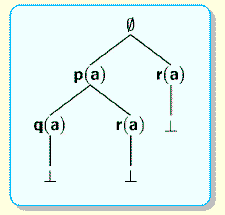

true -> human(socrates).
human(X) -> mortal(X).
-> は、直観的には "ならば" と読めば良い。-> の左側をルールの
前件部といい、右側を後件部という。前件部がなりたつときに、
後件部が成り立つということを意味している。
また、true は必ず成り立つので、true -> human(socrates) は、
human(socrates) が無条件に成り立つことを表している。
また、X は変数で、human(X) -> mortal(X) は、「(誰かが)人間である
ならば、(その人は)死ぬ運命にある」ということを表している。
さて、この状況において、どんなことが推論できるだろうか ? ソクラテスは人間で、人間は皆死ぬ運命にあるのだから、ソクラテスは 死ぬ運命にある、ということが容易にわかるだろう。
実際に、これを問題としてMGTPを起動すると、どうなるか。 MGTP はまず、無条件に成り立つ human(socrates) を導出し、これを メモリ上に蓄える。次に、human(X) の X には、socrates を代入すること ができるから、mortal(socrates) を導出し、メモリ上に蓄える。 これ以上、適用できるルールはないから、メモリ上に蓄えられた { mortal(socrates), human(socrates) } を出力して終了する。
出力された{ mortal(socrates), human(socrates) } は、 与えられた問題において、矛盾のないひとつの解釈を与えていると 見なすことができ、{ mortal(socrates), human(socrates) } を この問題のモデル(model)という。モデルは、 直観的には推論結果のことである。
後件部に場合わけのある場合を除けば、モデルは、高々1つである。 (モデルが存在する場合を「充足可能」といい、モデルが存在しない場合を 「充足不能」という。
もし、ソクラテスが男性であるとか、 女性であるとか、あるいは、男性でないとか、女性でないといった はっきりした事実がなければ、ここで推論は終了し、以下のような2つの モデルを出力することになる。
{ mortal(socrates), human(socrates), male(socrates) }
{ mortal(socrates), human(socrates), female(socrates) }
ソクラテスが男性であることを記述するのは簡単である。 単に、問題に true -> male(socrates) と追加すればよい。 このルールがあるときには、human(X) -> male(X); female(X) という 場合わけのルールがあっても場合わけは生じない。なぜなら、 男性であるということがすでにメモリ上にある場合には、 男性または女性である、というルールは、何ら新しい情報を与えないからである。 (ここで、male(X); female(X) は male(X) に包摂される、という)
female(socrates) -> false.
ここで、false は矛盾を意味する。ソクラテスが女性だったら矛盾する ということなので、当然 female(socrates) を含むものは モデルとはならない。このように後件部に false を持つルールを棄却ルールという。 上のルールは、意味的には、「female(socrates) の否定が成り立つ」と 等しい。
さて、ここで、数学的な定理証明との関係についても触れておかなければならない。 数学的な定理証明では、通常、無矛盾な公理の集合を用いて証明すべき定理 が正しいことを証明するのだが、背理法では、定理の否定を仮定して、そこから 矛盾が導出されることを証明する。 背理法による証明は、MGTP では、定理を棄却ルールとして記述することに 対応する。すなわち、定理の否定がなりたつ、というルールを 無矛盾な公理系に追加するわけである。そこから、モデルが存在しない、 ということがわかれば、定理の否定を追加したことによって矛盾が生じたという ことになり、結果として、定理が証明されたことになるわけである。
数学的な定理証明は、MGTP では、「公理を表すルールに、定理の否定を追加し、 充足不可能であることを示す」ことになる。
ソクラテスの例で、「ソクラテスは死ぬ」という定理を証明したい場合、 ルールは以下のようになる。
true -> human(socrates).
human(X) -> mortal(X).
mortal(socrates) -> false.
結果は、当然 false が導出されるので、モデルは存在せず、充足不可能である。 したがって、定理(mortal(socrates))は証明されたことになる。
MGTP では、今まで、数学的な問題やパズルなどの制約充足問題など、さまざまな 問題を扱ってきた。詳しくは、それぞれの各論を参照されたい。
MGTP のルールは、前件部 -> 後件部 という形式になっていて、 前件部は、条件を表す述語列、また、後件部は帰結を表す述語列である。 前件部の条件は「かつ」、すなわち、連言であるのに対し、 後件部は、「または」、すなわち、選言である。 一階述語論理の文は必ず、この形式に置き換えることができるので、 文法としては、これで十分である。
ルールの中で、前件部が true のものを『正節』あるいは『初期ルール』という。 意味的には、無条件に成り立つものを指す。 また、後件部が false のものを『負節』あるいは『棄却ルール』という。 無条件に成り立つ否定情報や矛盾を引き起こす条件などが 記述できる。数学的な定理証明の場合には、証明すべき定理を前件部とするような 棄却ルールが追加されることは説明した通りである。 これ以外のルールを『混合節』あるいは『拡張ルール』という。直観的には、 新しい事実をメモリに追加していくルールである。
以下、簡単な例題とその証明木を示す。 証明木は、モデルの候補となる述語の生成を木構造として表したものである。
(例題)
true -> p(a);r(a).
p(X) -> q(X);r(X).
r(X) -> false.
p(X),q(X) -> false.
(証明木)
